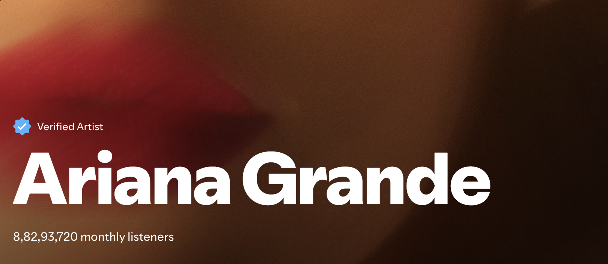
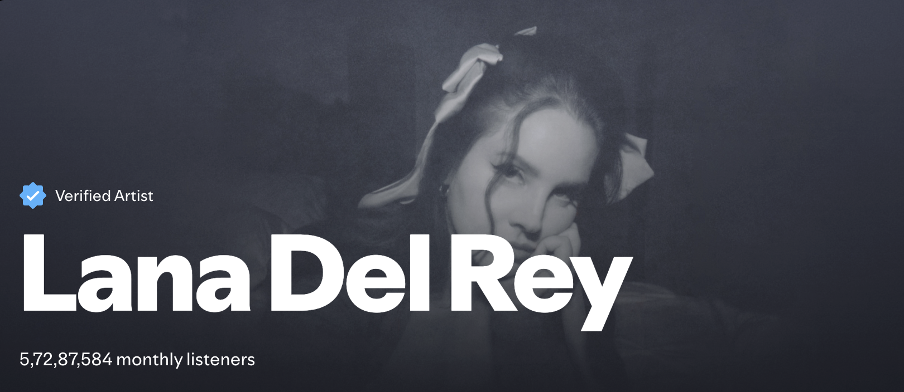
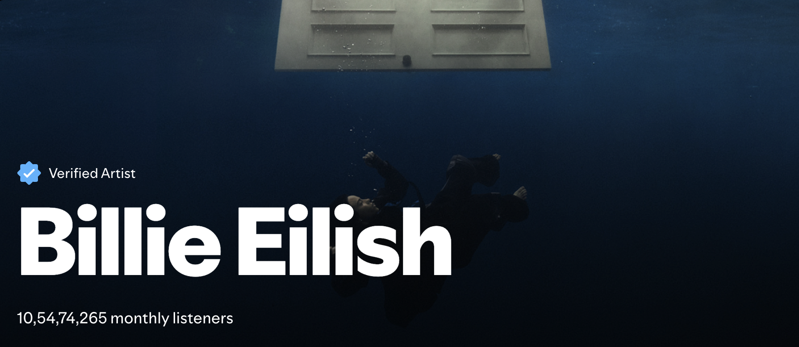

She is a Multi-platinum, award-winning singer, songwriter, and actress. known for her powerful vocals and hit songs like "Thank you Next" and "7 Rings". And ofcourse an industry breaker>
She is a captivating singer-songwriter known for her dreamy, nostolgia-tinged sound and hauntingly beautiful vocals. with hits like "Salvatore" and "Summertime Sadness".
She is a Revolutionary singer, Songwriter who have taken music world by storm with her bold, genre-bending sound. with hits like "Wildflower" and "L'amour de ma vie".
